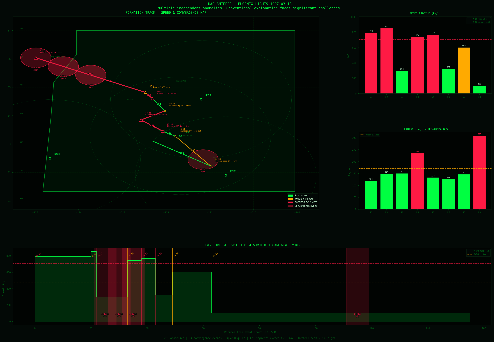

UAP Sniffer · Public Report
Phoenix Lights (1997)
Multi-sensor anomaly analysis
March 13–14, 1997 · Southern Arizona · 155-minute modeled timeline window
Main finding
Magnetometer and NEXRAD-archive lenses both flag anomalies in the same ±10-minute convergence window, peaking at 6.333σ at 1997-03-14 03:25 UTC, with a second matched window six minutes later at 03:31 UTC.
That wording means: independent instrument streams produced threshold-crossing anomaly timestamps close enough to merge under the pipeline’s convergence rule. It does not claim to identify a mechanism — only that public archives returned measurable structure aligned with the event timeline.
Convergence definition in code: anomalies from different lenses whose timestamps fall within ±10 minutes of a center time are grouped into one convergence event (see ConvergenceEngine in core/anomaly.py).
What we did
Pull public sensor archives for the Phoenix Lights modeled timeline, baseline-normalize each stream with rolling sigma scoring, flag anomalies above threshold, then merge cross-lens hits into convergence windows when multiple independent lenses spike near the same time.
Event geometry uses nine witness-report points mapped into the modeled route and timing used by the run (805 km modeled track length in this export).
Key numbers
| Window (UTC) | Sensors active | Peak sigma |
|---|---|---|
| 1997-03-14 03:25 | magnetometer + NEXRAD lens | 6.333σ |
| 1997-03-14 03:31 | magnetometer + NEXRAD lens | 6.333σ |
| 1997-03-14 02:30 | magnetometer + NEXRAD lens + space weather | 4.121σ |
Fourteen convergence events were detected across the full modeled span; the two strongest are consecutive minutes shown above.
Visual evidence



How to read this
- There are measurable, timestamped anomaly windows in public data.
- Those windows overlap the documented Phoenix Lights modeled timeline.
- The strongest signal concentrates into specific convergence merges, not a flat night of noise.
- Two independent lenses registering anomalies inside the same convergence merge is stronger evidence than a single stream drifting alone — though shared causes still need to be ruled case-by-case.
This analysis does not identify a cause or fully explain the Phoenix Lights. Space weather context, instrument behavior, and unrelated atmospheric activity are part of the fuller lens stack — see the long report for the complete instrument table.
Full reports
Long report — outputs/phoenix_lights_report.md
Reproduce
To rerun against the same window:
python sniffer.py --event phoenix_lights_1997 --lenses all
python phoenix_run_models.py --event phoenix_lights_1997